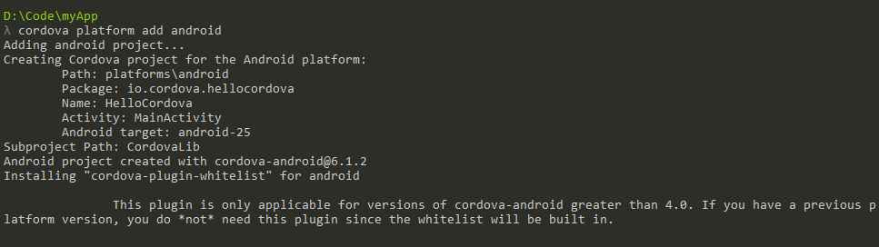
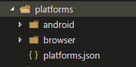
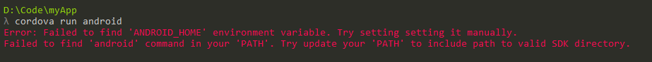
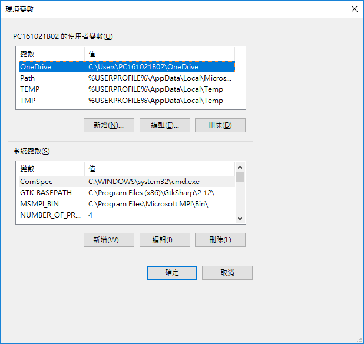
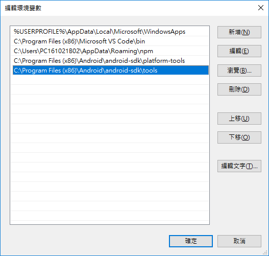
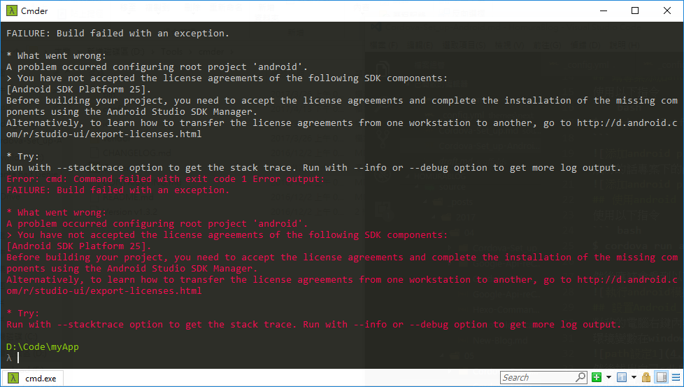
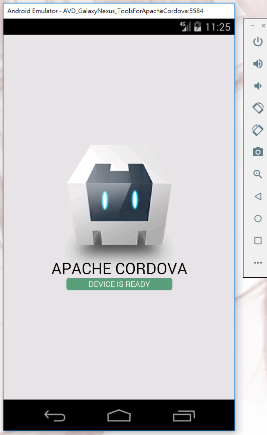
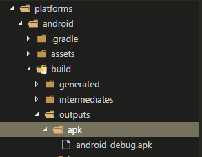

前言
繼上篇Cordova安裝之後，接下來要說一下怎麼編譯成apk和使用android模擬器運行，其實我在學會使用Apache Cordova的編譯器之前，都是用Adobe Phonegap的線上編譯器，其實用久真的不是很好用，還是能在自己的PC編譯比較好，那就廢話不多說進入實作吧。
實作
幫專案添加android platform
使用以下指令

成功的話專案下的platforms資料夾底下會多出一個android資料夾

使用android 模擬器模擬
使用以下指令
然後應該會看到以下錯誤訊息，因為還沒設置android sdk的path

設置Android_Home和Android的path
對我的電腦右鍵內容->進階系統設定->進階->環境變數
環境變數在windows上分2種一種是指對使用者(上面)，一種是對全部使用者(下面)，這邊編輯使用者就好了!

然後找出自己sdk的安裝位置，然後新增的2個值，指向platform-tools和tools這2個位置，如果是win7的話記得都要在後面加上;，我這邊是win10比較高級有UI可以用..

再新增一個ANDROID_HOME變數指向android-sdk根目錄
設置完成後記得關掉命令提示字元(終端機)，因為他不會自己重讀path一定要重開，我第一次就笨笨的設好了為啥還抓不到…
然後在執行一次剛剛的指令
應該會有抓不完jdk，然後又丟新錯誤給我

添加licenses
這步我記得在win7是沒這問題，不知道是不是新版sdk有什麼問題，google了一下用這2行指令解決
然後正常來說應該就行了，但是win10很討厭把資料夾的權限鎖住了，造成以下錯誤訊息
打開sdk資料夾權限
這邊先用系統管理員權限打開cmd，然後指向android-sdk根目錄，輸入以下指令
輸入完後就能修改資料夾權限了
執行及編譯成apk
到這步我是沒問題了，如果還有問題可能是sdk的platform設定有問題，個人公司的win7碰到的，有問題去目錄底下的AVD Manager.exe設定一下目標平台
然後再執行一次
成功後如下圖結果

然後編譯apk指令
編譯後可以再專案目錄底下找到apk

後記
其實工作時我並沒有成功過使用模擬器，只有編譯成apk，工作的電腦好像沒有Hype-V的功能連模擬器都不能用，在家用win10果然可以用，搞了好久終於設定完成!(累癱)